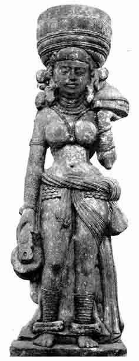
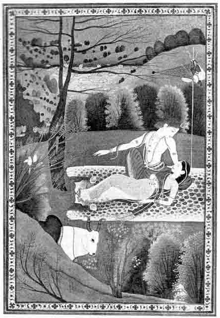

Selected Examples of Indian
Painting and Sculpture
BY O. C. GANGOLY
V. SRI-LAKSHMI

SRI-LAKSHMI
School of Mathura, circa 2nd century A.D.
Collection of the Bharat Kala Parishad, Benares
By the somewhat exaggerated attention given, (by a class of antiquarians inclined to see wonders in everything connected with Greece), to the debased and bastard school of Hellenistic sculpture which prevailed in Gandhara, the vital and original qualities of the contemporary School of Mathura has not earned the recognition that it should amongst connoisseurs and lovers of Indian Art. The clouds of controversy that had been raised over the so-called indebtedness of the Mathura School to that of the Gandhara had completely obscured the fact that the prolific products of the School of Mathura represent, in the main, a direct development and continuation of the older native Indian Art of Bharhut and the still older, art of Besnagar. The most obvious evidence of this has been furnished by the characteristic series of female types, nudes and semi-nudes, represented on railing-pillars, recovered from many old sites in and near Mathura. They have been identified as Yakshis, Apsaras, Devatas or Vrikshakas (dryads, demi-Goddesses, or tree-nymphs). Whatever they may represent, they reveal indigenous conceptions of Indian artists expressed in the plastic language of old Indian Art, untouched by any influence of foreign technique or formula. No more convincing example illustrating the indigenous and original character of the School of Mathura has yet come to light than a wonderful caryatid or pillar-statue–representing a female figure–now in the collection of the Bharat Kala Parishad, Benares. It is in spotted redstone of sikri, and is in a perfect state of preservation. It furnished a decorative motive for a pillar carving a vase, and obviously belongs to an era when sculpture had not yet evolved a life independent of the construction that it decorates. Indeed in all phases of Indian Art, sculpture has never fully outgrown its intimate association with architecture. Anyhow, this quaint and dignified figure represents the Indian conception of beauty of the female form–as interpreted by the old Indian sculptors. Carrying a basket of wickerwork in her left hand, containing perhaps food, and a jar of water in her right, she stands exquisitively poised–in a noble and dignified repose. Related to many cognate and contemporary fragments of the same School, it adheres to a definite iconographic formula and has been identified as the popular old Indian Goddess Sri-Lakshmi, –whose cult dates from pre-Buddhistic times. The figure seems to echo a passage in the Taittiriya Upanishad (i.4) where Sri is said to bring garments, cows, food and drink, "therefore bring me Sri". She wears the suggestion of a happy smile on her face, which is the very reverse of the coquetry of the smiling yakshinis. The upper part of her body is bare–but hardly touched by any kind of erotic suggestion, and she is the very picture of a naive simplicity and unstudied grace. The heavy anklets on the legs seem to rivet the figure on the pedestal, and emphasize the static repose with an inevitable plastic logic and also help the figure very happily to perform the function of a caryatid. Lakshmi with her gifts of the sweets and abundance of Life, is here incarnated in a form which typifies a grace and a dignity and a static exquisitiveness of repose which somewhat recalls but completely rivals the Lemnian Athena of the Pheidian school.
VI. SHIVA AND PARVATI

SHIVA AND PARVATI
School of Kangra, circa 1800.
Museum of Fine Arts, Boston.
It has been well remarked that the School of Kangra, the latest phase of the old Schools of Indian Painting, offers to the un-initiated an easy and a graceful entrance to the Temple of Indian Art. The quaint anatomy and the forbidding iconological features of Indian Sculpture, offer even to our ‘educated’ Indians today (somewhat spoilt by an accidental contact with the questionable phases of European Art), formidable barriers to a right understanding of (the aesthetic values of Indian Art. But the Hill Schools of the Punjab Himalayas, particularly the miniatures of the Kangra School–in their picturesque yet profound presentations of religious themes in a pleasant and attractive dress, offer an inviting gateway to the treasures and the glories of Indian Art. To the un-initiated, no better approach to the subject can be furnished than the deeply emotional themes and the entrancing colour schemes of the Kangra miniatures. Of all the masterpieces of the School, which the apathy and ignorance of Indians have driven to permanent exile in foreign countries, and are utterly lost to India, –none is so typical of the depth of feeling and grandeur of treatment, and permeated with the essence and spirit of Indian mythical themes–as the magnificent ‘Shiva and Parvati’ in the Collection of the Museum of Fine Arts, Boston. The story of the picture is borrowed from an episode in the Bramha-vaivarta purana, known as "Ganesha-purana" and is current in the popular Hindi version of Ganesha-purana bhasa by Tulsidas (Benares Edition, Bhargava Press). It is a dialogue between Shiva and Parvati who was informed that each of the skulls on the garland of Shiva represented an incarnation of Parvati. She thereupon asked for a boon or a vijamantra (magic syllable, the quintessence and seed of great potentiality) by which she could be released from the tiresome cycle of the necessity of birth and death (tate mora hota nahin nasha) and she begged of him to confide to her the secret of immortality (dasi jani kripa ava kijai vija mantra hamahum kahan dejai). And Shiva started confiding the great secret which took more than 12 years to recite, and in the meantime the fair auditor fell asleep exhausted–while Shiva, engrossed in His tale of narration, did not perceive that Parvati had fallen asleep–and the great secret was overheard by a pair of birds on the neighbouring tree. This picturesque pauranic myth is visualised by the magic brush of Kangra–in terms of a familiar Himalayan landscape–in a lonely corner of which, sentinelled by an array of decorative trees, Shiva has spread His carpet of leopard-skin and planted His trisula, which is at once an emblem of asceticism and an offensive weapon for the deadly demons–for which Parvati has woven with her deft fingers a little pinion which points to the rows of lotuses in the distant mana-sarovara. In the foreground the stately Nandi mounts guard, and his bovine but forbidding looks are enough to chide away all intruders. The outlook as well as the treatment, offer a complete identification and a deep absorption of the artist in his theme which is unparalleled in the history of any Schools of Painting. The artist has put within a few square inches of paper, an amount of Unity, Vitality, Infinity and Repose which we will vainly seek in miles of Renaissance canvasses, In one sense, the Giants of the Renaissance are Pigmies in the treatment of religious themes so profoundly felt and interpreted by the Giants of the Indian Renaissance–whose names are unfortunately left unrecorded by any Indian Vasari but are anonymously commemorated in these miniature monuments of the Kangra School.